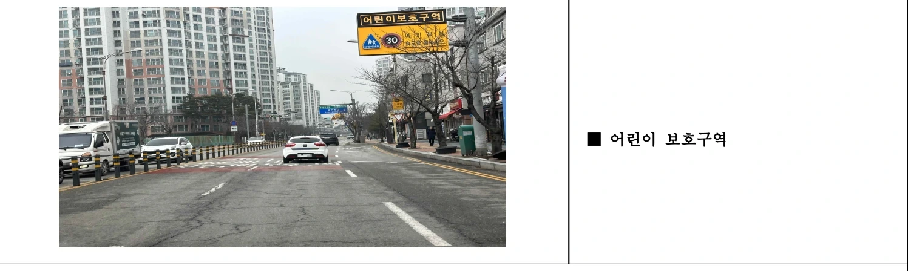

754. Hai cách lái xe nào là an toàn nhất trong tình huống sau?

- ①Hành vi cản trở đỗ xe do chất đồ đạc trong khu vực đỗ xe dành cho người khuyết tật.
- ②Dù là khu vực bảo vệ trẻ em nhưng không có trẻ em nên không cần tuân thủ tốc độ giới hạn tối đa.
- ③Lái xe tuân thủ tốc độ giới hạn tối đa được ghi trên biển báo an toàn.
- ④Vì trẻ em có thể đột ngột chạy ra nên phải chú ý quan sát khi lái xe.
- ⑤Trong khu vực được chỉ định là khu vực bảo vệ trẻ em, phải nhanh chóng đi qua với tốc độ tối đa.
Xem đáp án
Đáp án
③ Lái xe tuân thủ tốc độ giới hạn tối đa được ghi trên biển báo an toàn.
④ Vì trẻ em có thể đột ngột chạy ra nên phải chú ý quan sát khi lái xe.
Căn cứ
Vì nằm trong khu vực bảo vệ trẻ em nên tốc độ tối đa phải trong khoảng 30 km/h, khi phát hiện có trẻ em phải chú ý đến chuyển động của trẻ và quan sát phía trước. Tai nạn trong khu vực bảo vệ trẻ em xảy ra do không tuân thủ luật pháp, chẳng hạn như không lái xe an toàn, vi phạm nghĩa vụ bảo vệ người đi bộ, đỗ và dừng trái phép và vi phạm tín hiệu giao thông. Khi có người đi bộ qua đường, người lái phải dừng lại, đợi họ qua xong, kiểm tra an toàn rồi mới đi tiếp.
Phần căn cứ là bản dịch máy để tham khảo.